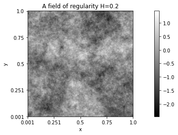
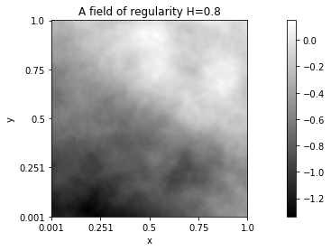
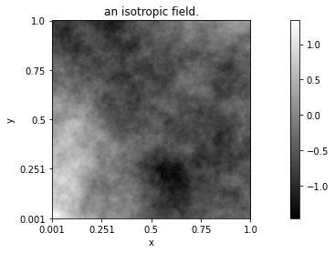
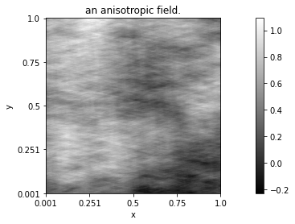

Glossary¶
Section author: Frédéric Richard <frederic.richard_at_univ-amu.fr>
- random field¶
A random field \(Z\) is a collection of random variables \(Z(x)\) which are located at positions \(x\) of a multidimensional space (for instance, the plane \(\mathbb{R}^2\)). A collection of variables defined on \(\mathbb{R}\) is rather called a random process.
The random field is Gaussian if any linear combination \(\sum_{i=1}^n \lambda_i Z(x_i)\) is a Gaussian random variable. The probability distribution of a Gaussian field is characterized by
- its expectation function:
- \[x \rightarrow \mathbb{E}(Z(x)),\]
- its covariance function:
- \[(x, y) \rightarrow \mathrm{cov}(Z(x), Z(y)).\]
- stationarity¶
A random field \(Z\) is (second-order) stationary if \(\mathbb{E}(Z(x))\) does not depend on the position \(x\) (is constant) and if \(\mathrm{cov}(Z(x), Z(y))\) only depends on the relative position \(x-y\). First and second-order properties of such a field are the same all over the space.
- increments¶
Increments \(W\) (of order 0) of a random field \(Z\) are random variables of the form
where \(\lambda_i\) are such that \(\sum_{i=1}^n \lambda_i =0\). For instance, \(Z(x+h) - Z(x)\) is an increment of \(Z\). More generally, increments of order \(k \in \mathbb{N}\) are increments such that \(\sum_{i=1}^n \lambda_i P(x_i) =0\) for any polynomial \(P\) of order \(k\).
An increment field \(W\) is a set of increments \(W(y)\) defined at any position \(y\) by
- intrinsic¶
An intrinsic random field of order \(k\) is a random field whose increments of order \(k\) are stationary [3, 4, 5, 6, 7, 12]. An intrinsic field of order 0 is simply called random fields with stationary increments.
- semi-variogram¶
Let \(Z\) be a random field with stationary increments. The semi-variogram of \(Z\) is defined, for any \(h\), by
- density¶
Let \(Z\) be a random field with stationary increments. A non-negative and even function \(f\) is the density of \(Z\) if
The density of an AFBF is of the form
where \(\tau\) and \(\beta\) are non-negative \(\pi\)-periodic functions depending both on the direction \(\arg(w)\) of the frequency \(w\).
- regularity¶
The regularity (in the Hölder sense) of a random field \(Z\) is the highest value \(H \in (0, 1)\) for which
holds with probability 1 for any \(\alpha < H\) and \(x, y\) in any arbitrary compact set.
 - isotropy¶
A field is isotropic if its properties are the same in all space directions. A Gaussian random field with stationary increments and density \(f\) is isotropic if and only if \(f\) is radial, ie.
\[f(w) = \tilde{f}(\vert w \vert), \forall w,\]
meaning that values of \(f\) does not depend on the direction \(\arg(w)\) of \(w\), but only on its module \(\vert w \vert\).
A field is anisotropic if it is not isotropic.
The difference between realizations of isotropic and anisotropic fields is illustrated below.
 